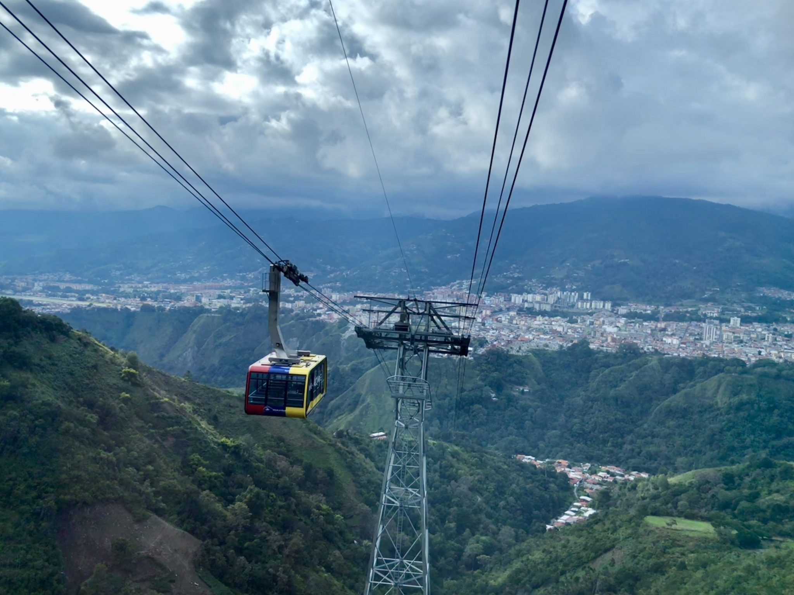
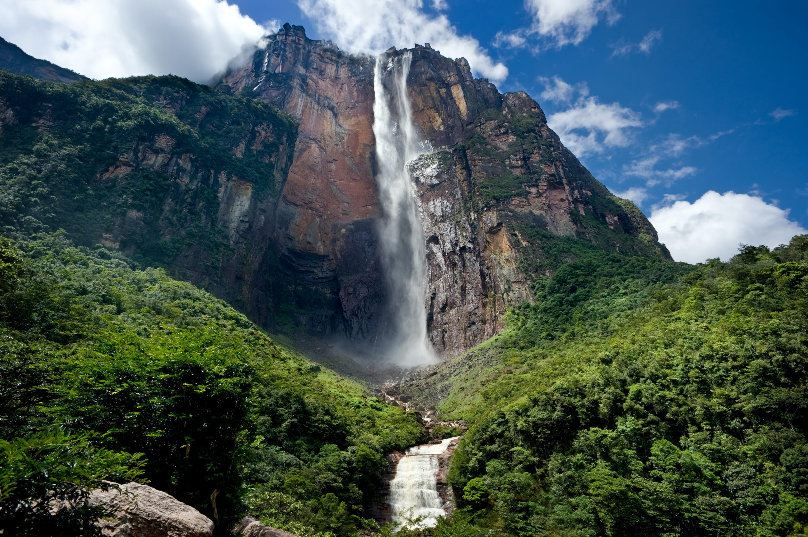

MERIDA

Merida state is a major tourist center in Venezuela. It has an extensive network of hotels not only in the capital city but also throughout the state. Starting from the city of Mérida, it has the longest and highest cable car in the world, reaching the Espejo Peak of 4,765 m (15,633 ft). In the Méridan páramos, there are good hotels and restaurants. Another place to visit is Mucuchíes, the village of Los Aleros. There is also the National Observatory of Llano del Hato. The city has several museums worth visiting: Beekeeping Museum, Colonial Art Museum, Modern Art Museum, and the Museum of the great Méridan Don Mariano Picón Salas and the Aquarium Garden. Also in the state are hot springs such as Bailadores Las Tapias and la Capellanía Park.
SALTO ANGEL

Canaima Park is spread over 30,000 square kilometers to the border with Guayana Esequiba reclamation area now Guyana and Brazil, for its size is considered the world's sixth largest national park. About 65% of the park is occupied by rock plateaus called tepuis. These are a unique biological environment, also presenting a great geological interest. Its steep cliffs and waterfalls (including Angel Falls - Salto Angel-, which is the highest waterfall of the world, 1,002 m) are spectacular sceneries.